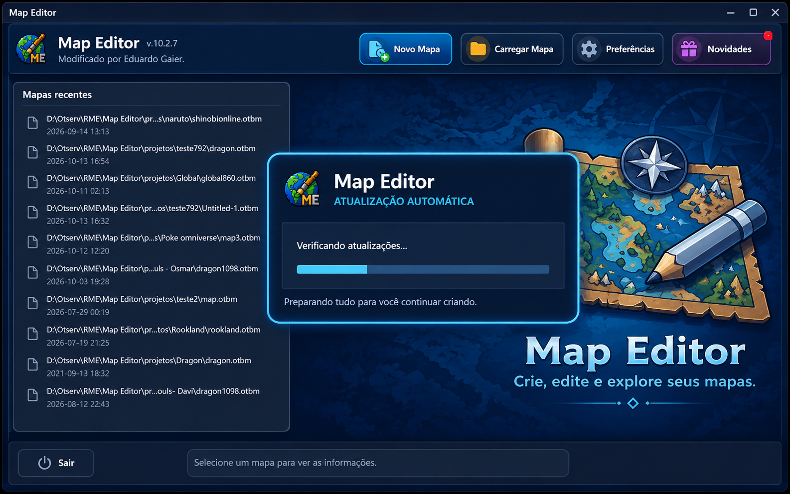
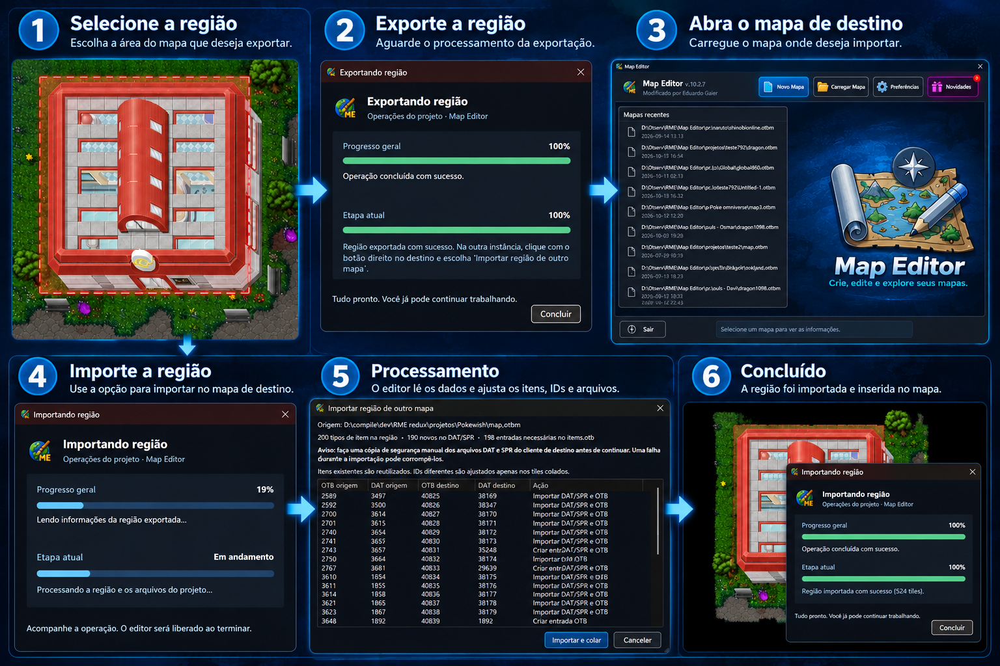

MCP para Codex e IA
Conecte clientes compatíveis, como o Codex, ao servidor MCP local do RME para consultar e editar o mapa aberto, criando conteúdo diretamente no editor. A permissão de escrita é controlada nas opções MCP / AI do RME.
Map Editor · versão 10.2.7
Uma interface renovada, fluxos de trabalho mais práticos e novas formas de conectar suas ferramentas de criação.
Atualizado em 19 de outubro de 2026

Atualização automática
Ao iniciar, o Map Editor verifica se há uma nova versão. Quando encontra uma atualização, baixa e instala o pacote, depois abre novamente o editor para você continuar trabalhando.
O processo valida os arquivos recebidos e mantém cópias de recuperação para restaurar a instalação se ocorrer uma falha.
Transferência entre mapas · Beta
Exporte uma área e importe-a em outro mapa. O editor compara os itens, reutiliza os compatíveis, importa os que faltam e converte os IDs para o cliente de destino.
Este recurso está em Beta. Faça uma cópia manual de segurança dos arquivos DAT/SPR do mapa de destino antes de importar itens.

Mais novidades
Conecte clientes compatíveis, como o Codex, ao servidor MCP local do RME para consultar e editar o mapa aberto, criando conteúdo diretamente no editor. A permissão de escrita é controlada nas opções MCP / AI do RME.
Object Builder e Item Editor ficam reunidos no Item Manager. Navegue por itens, outfits, efeitos e sprites do DAT/SPR do projeto, edite objetos e importe ou exporte arquivos OBD e PNG.
A janela de scripts agora permite selecionar um script e carregá-lo diretamente. A tela inicial ganhou novo layout e ícones atualizados para as ferramentas do Map Editor.
Map Editor
Veja mais detalhes do RME Map Editor e do PackLibrary.